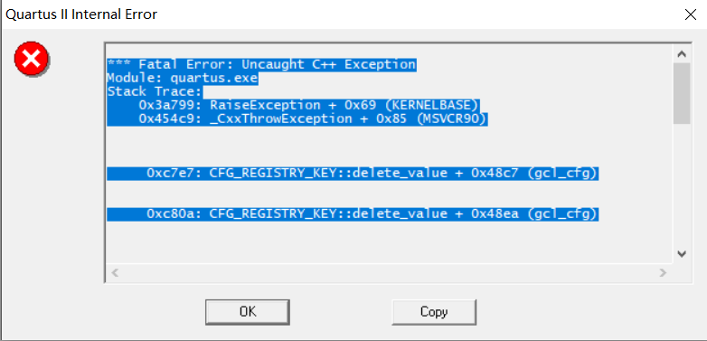
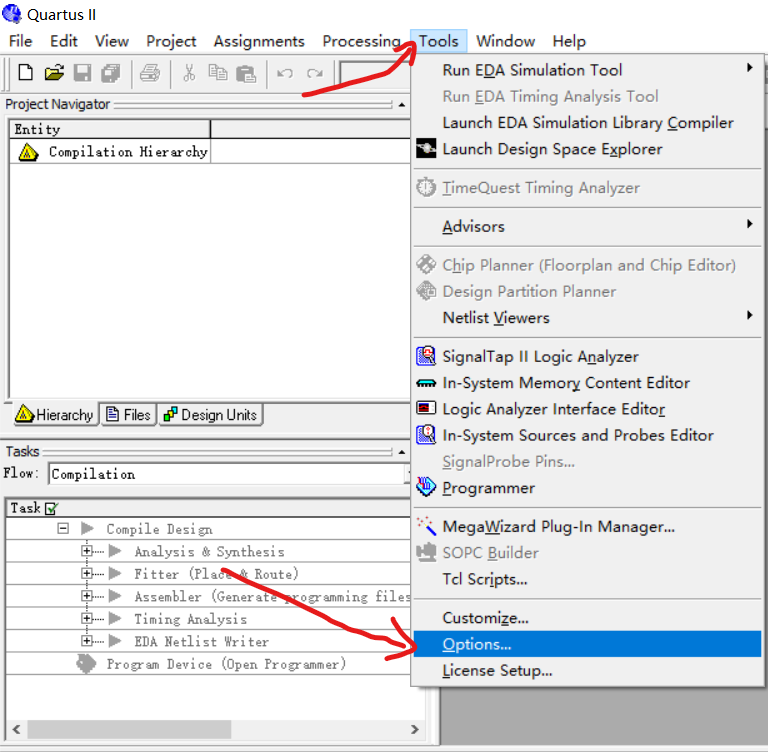
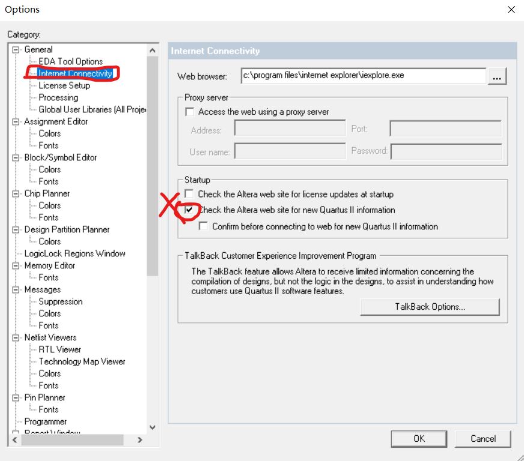
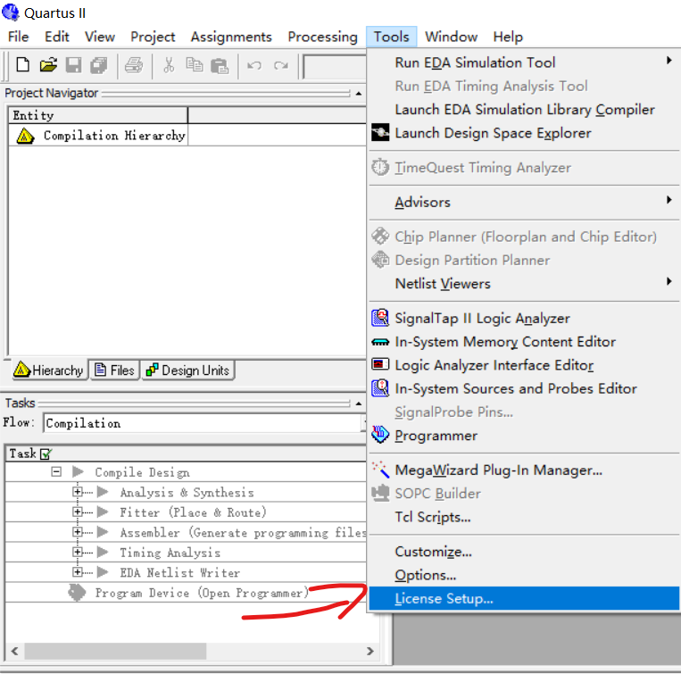
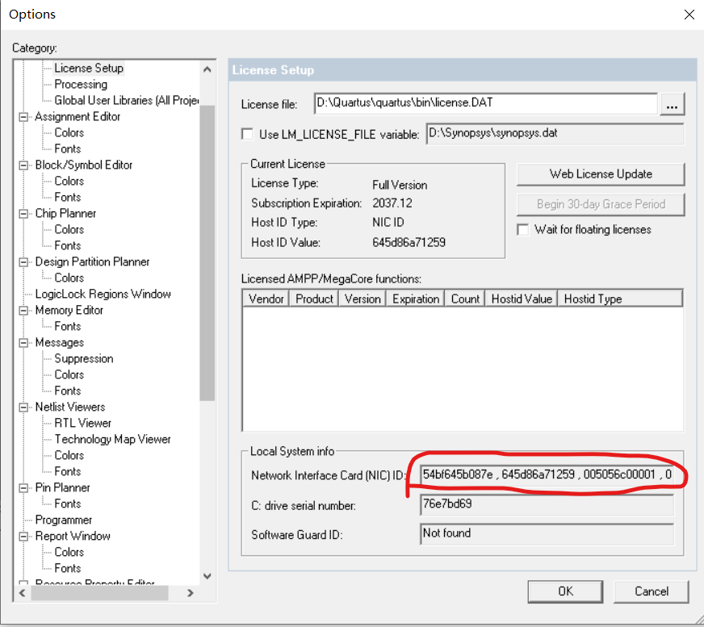
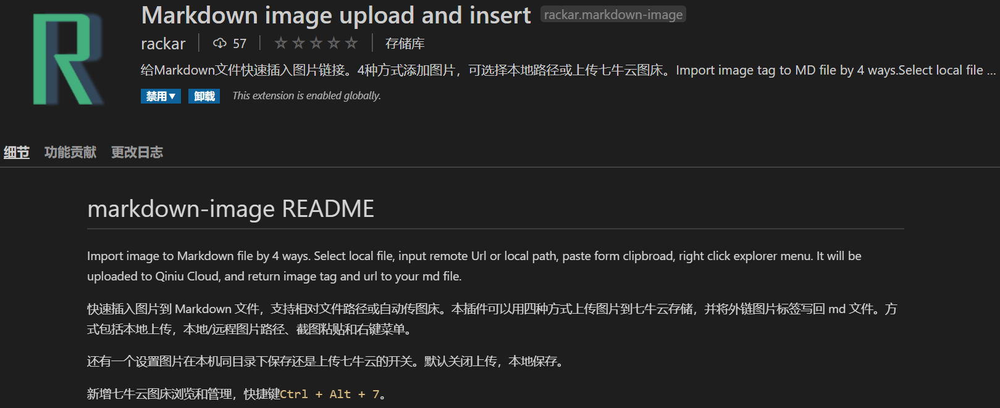
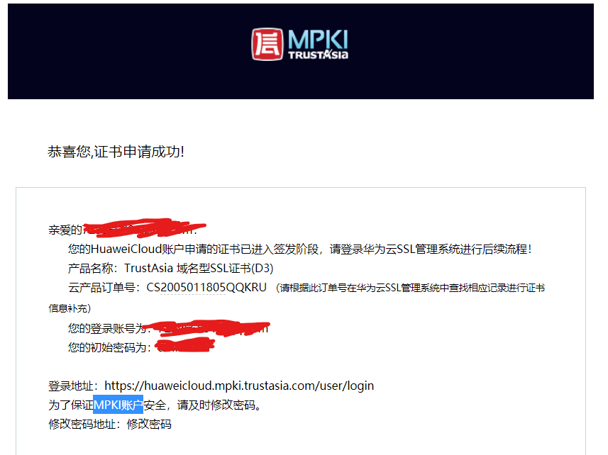
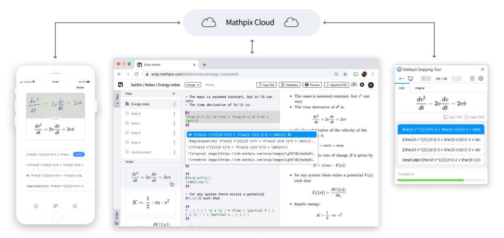
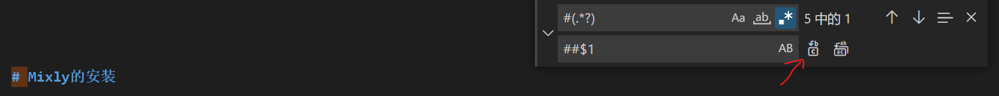

05 Other_Mixed¶
mkdocs中更改material主题的页脚以使备案号链接到工信部网站¶
问题引入¶
在ICP备案成功后往往会收到如下通知
1 | 请您按照《非经营性互联网信息服务备案管理办法》要求 ，在您的网站首页底部中间位置，放置您的备案号并链接至"http://www.beian.miit.gov.cn/"。例如"京ICP备999999号"（此备案号为例子，请您一定更换成自己的备案号）。 |
当然，默认下mkdocs的material主题仅仅在yml中提供copyright的修改，并且无法在yml中设置超链接。（如果被查到没有链接至对应网站，可能会被罚款？）
工具¶
- 脑子
步骤¶
首先我们要明白：mkdocs有如此强大的构建能力，是因为这个主题的很多文件已经被编辑好了，手册上的描述如下：
1 2 3 4 5 6 7 8 9 10 11 12 13 14 15 16 17 18 19 20 21 22 23 24 | . ├─ assets/ │ ├─ images/ ## Images and icons │ ├─ javascripts/ ## JavaScript │ └─ stylesheets/ ## Stylesheets ├─ partials/ │ ├─ integrations/ ## 3rd-party integrations │ ├─ language/ ## Localized languages │ ├─ footer.html ## Footer bar │ ├─ header.html ## Header bar │ ├─ hero.html ## Hero teaser │ ├─ language.html ## Localized labels │ ├─ nav-item.html ## Main navigation item │ ├─ nav.html ## Main navigation │ ├─ search.html ## Search box │ ├─ social.html ## Social links │ ├─ source.html ## Repository information │ ├─ tabs-item.html ## Tabs navigation item │ ├─ tabs.html ## Tabs navigation │ ├─ toc-item.html ## Table of contents item │ └─ toc.html ## Table of contents ├─ 404.html ## 404 error page ├─ base.html ## Base template └─ main.html ## Default page |
Note
注意那个footer.html,这个就是我们要修改的页脚，当然，html是很容易打开并修改的，重点是如何找到它
-
以上文件被放在了之前使用
pip install mkdocs-material命令安装的位置了，也就是python的库路径中下面我们开始操作 -
找到mkdocs-material库的位置并打开
需要注意的是，material是mkdocs的一个主题，我们既然引用了它，那么修改默认主题的footer.html是没有用的，要找准material的页脚文件，我电脑的路径如下：
C:\Users\用户名\AppData\Local\Programs\Python\Python37\Lib\site-packages\material\partials
-
找到
footer.html并打开 -
在为修改时，你会看到这样一行，它是将你在yml文件中修改的copyright引用到此处的意思：
1 | {{ config.copyright }} |
-
添加链接到工信部的超链接
-
将上面一行替换为(对，整行替换)：
1 | <a href="http://www.beian.miit.gov.cn/">{{ config.copyright }}</a> |
【另附】密码访问¶
在html文件中加入以下代码：
1 2 3 4 5 6 7 8 9 10 | <!-- 加口令 --> <script type="text/javascript"> loopy(); function loopy(){ var sWord =""; while (sWord != "7373494259a") { sWord = prompt("输入正确口令后才能访问："); } } </script> |
REFERENCE 参考文献¶
APPENDIX 附录¶
All the coding in this document is Available on the Github.
TTECH SUPPORT 技术支持¶
Edit at 2020 March 04
Quartus II 9.1仿真软件安装时的问题¶
Abstract¶
此文介绍了：
- 由自动更新引起的闪退问题及其解决
- 破gai时多个NICID时的解决方案
问题一¶
- 安装完成后会出现这个界面，点击确定后会闪退。

问题一解决方案¶
- 第一步：先把电脑的网络关闭，这个问题是由于自动检查更新导致的
- 第二步：打开软件，在菜单栏找到TOOL，再找到Option选项，打开

- 第三步：在左侧栏中找到 Internet Connectivity，再到右侧将Update勾选去掉

问题二¶

- 在TOOL->License Setup里面，会有多个NIC ID，在破改的时候可能会用到这个参数：

问题二解决方案¶
- 这个其实是你电脑网卡的物理地址，如果你有多个网卡或者虚拟网卡，就会有多个ID
- 一般随机找一个来使用就可以了（复制到用于破gai的License.dat文件里面）
- 【重要】记住，如果你是64位电脑，将破解文件复制到
quartus的bin64的目录下进行破解，并将输出的License.dat放在bin64目录下
小技巧¶
- Quartus II9.1恢复默认窗口布局:Tool->Customize->general->Reset All
REFERENCE 参考¶
CSDN——Quartus II出现*** Fatal Error: Uncaught C++ Exception Module: quartus.exe Stack Trace CSDN——Quartux II破解
常用网站推荐¶
找书网站¶
- 缤闹论坛binnao.com
- 有许多闲书技术类较少，但比较广泛
- 学兔兔bzfxw.com——可淘宝代下载
- 提供很多教材、专业书本与GB标准文件的下载
- CSDN——可淘宝代下载
- 最近（202004）版权查的严，CSDN部分资源暂停下载
移动Ubuntu系统实现Ubuntu2Go Moving Ubuntu as Ubuntu2Go¶
情况¶
我在一个移动的机械硬盘中安装了Ubuntu，并配置了一些软件。它可以通过Windows Boot Manager选择并启动，但是我现在我购买了一个SANSUNG T7 SSD硬盘，它具有极高的随机存取速度，因此我想利用它来制作Ubuntu2GO启动盘，我不想重新配置我的Ubuntu，因此我在考虑能否进行移植。
注意，不仅是在我的电脑上启动我还期望它可以在其他的基于X86架构的电脑上启动。
¶
小技巧¶
将网页添加到桌面快捷方式¶
- 桌面上
右键->新建快捷方式。 - 键入网页地址与名称，完成
mkdocs中的表格、¶
- 表格必须严格按照要求，不能多
| - 无序列表的缩进在mkdocs中必须有两个tab才能被识别
V2Ray的用户PAC自定义规则¶
- 在V2Ray的
参数设置->用户PAC设置中的输入框中键入需要代理的网站（如Github.com）， - 确认后代理重新加载，可以连接了
- 多个网站用逗号隔开即可
git如果包含子git项目，子项目将不会被提交¶
- 做法：删除子项目（但不是直接删除.git文件）：
如这样删除Latex2MathML目录下的子git 项目
1 | git rm -rf --cached other/Latex2MathML |
在Markdown中直接粘贴图片（VScode环境）¶
VS Code 插件中搜索 markdown-image 就可以找到。点击 Install 安装。或者使用快捷键Ctrl+P，键入 ext install markdown-image

1 | Ctrl+Alt+8 //实现从剪切板粘贴 |
华为云免费SSL¶
华为云市场搜索证书。可以找到免费的SSL证书购买。
以TrustAsia信亚免费证书为例（以商品详情为参考）：
- 购买后会发送邮件到华为云注册的邮箱
- 
- 邮件中包含一个HUAWEI CLOUD SSL账号（MPKI账号）登陆后按照指引有两种验证域名所有权的方式
- DNS验证
- 文件验证
Ubuntu Apache2 重定向到https¶
打开网站配置文件，比如 /etc/apache2/sites-available/000-default.conf ， 在 <\VirtualHost *:80><\VirtualHost> 标签内随便一个地方加入以下三行
1 2 3 | RewriteEngine on
RewriteCond %{HTTPS} !=on
Rew-riteRule ^(.*) https://%{SERVER_NAME}$1 [L,R=301]
|
Ubuntu Apache2 SSL配置¶
Ubuntu系统Apache 2部署SSL证书 更新时间：2020-01-14 18:02:09
本文档为您介绍了如何在Ubuntu系统以及Apache2中安装阿里云SSL证书。
环境准备¶
操作系统：Ubuntu
Web服务器：Apache 2
前提条件¶
已从SSL证书控制台下载Apache服务器证书。 已安装Open SSL。
操作步骤¶
运行以下命令在apache2目录下创建ssl目录。
1 | mkdir /etc/apache2/ssl |
运行以下命令将下载的阿里云证书文件复制到ssl目录中。
1 2 3 | cp -r YourDomainName_public.crt /etc/apache2/ssl cp -r YourDomainName_chain.crt /etc/apache2/ssl cp -r YourDomainName.key /etc/apache2/ssl |
运行以下命令启用SSL模块。
1 | sudo a2enmod ssl |
启用SSL模块 SSL模块启用后可执行ls /etc/apache2/sites-available查看目录下生成的default-ssl.conf文件。
Note
说明 443端口是网络浏览端口，主要用于HTTPS服务。SSL模块启用后会自动放行443端口。若443端口未自动放行，可执行vi /etc/apache2/ports.conf并添加Listen 443手动放行。
运行以下命令修改SSL配置文件default-ssl.conf。
1 | vi /etc/apache2/sites-available/default-ssl.conf |
在default-ssl.conf文件中找到以下参数进行修改后保存并退出。
1 2 3 4 5 6 | <IfModules mod_ssl.c> <VirtualHost *:443> ServerName #修改为证书绑定的域名www.YourDomainName.com。 SSLCertificateFile /etc/apache2/ssl/www.YourDomainName_public.crt #将/etc/apache2/ssl/www.YourDomainName.com_public.crt替换为证书文件路径+证书文件名。 SSLCertificateKeyFile /etc/ssl/apache2/www.YourDomainName.com.key #将/etc/apache2/ssl/www.YourDomainName.com.key替换为证书密钥文件路径+证书密钥文件名。 SSLCertificateChainFile /etc/apache2/ssl/www.YourDomainName.com_chain.crt #将/etc/apache2/ssl/www.YourDomainName.com_chain.crt替换为证书链文件路径+证书链文件名。 |
修改SSL配置文件 * /sites-available：该目录存放的是可用的虚拟主机；/sites-enabled：该目录存放的是已经启用的虚拟主机。
-
说明 default-ssl.conf文件可能存放在/etc/apache2/sites-available或/etc/apache2/sites-enabled目录中。
-
运行以下命令把default-ssl.conf映射至/etc/apache2/sites-enabled文件夹中建立软链接、实现二者之间的自动关联。
1 | sudo ln -s /etc/apache2/sites-available/default-ssl.conf /etc/apache2/sites-enabled/001-ssl.conf |
重新加载Apache 2配置文件。运行以下命令重启Apache 2服务。
1 2 | sudo service apache2 reload sudo service apache2 restart |
重启Apache 2服务，完成
REFERENCE 参考¶
阿里官网教程https://help.aliyun.com/document_detail/102450.html
手写公式转Tex/MathML/Unicode Liner——MathPix Snip¶
Mathpix——电脑端每个月免费用50次，手机端无限制使用
- 这个软件对手写或者打印的公式,甚至是表格、文字都有效果，可以试一试，转成Tex之后，可以用以下工具，将公式键入Word:
- 【在Word中快速打出公式】LATEX2MathML工具——将TEX公式转换为Word兼容的格式
- 使用文档：https://mathpix.com/docs/snip/try-examples-equations
- 视频教程：https://www.bilibili.com/video/BV1AJ411X7Ek

正则表达式：匹配任意字符串¶
- 正则表达式(Regular Expression)匹配任意字符串
1 | (.*?) |
VMware安装MacOS¶
https://blog.csdn.net/hiudawn/article/details/80423420
这里使用的是1.VM12+2.破解工具+3.OS X 10.11.这样的组合才能较简单的安装成功
解决安装黑苹果出现“没有符合安装资格的软件包”:
解决方法:
1.打开实用工具——终端
2.如果你的Mac是联网状体，可以输入一下代码：
ntpdate time.apple.com
不过安装的时候一般是没法联网的
3.我们只能输入：date 070512052018.03 （这里设置一个2015年以后的时间，因为10.11发布时2015年）
mkdocs使用extention： - pymdownx.arithmatex的时候要安装py的一个包¶
pip install pymdown-extensions
不然会报错
material编译的时候，是版本更新的问题。（python错误）¶
原因是，materials新的更新和我原来的主题不适配，所以build的时候出错了。还好保存了当时的mkdoc-materials的git包，从那里安装了一遍这个主题，不然几乎无法恢复了
正则表达式在替换中，使用查找到的内容（子表达式）：¶
例如，在markdown中查找每一个#换行符，并降一个标题级别。其原理是$1表示查找中的第一个子表达式。
【重要】注：小括号标记了一个子表达式开始和结束的位置，子表达式可以供以后使用（例如在替换中使用）
查找：```##(.*?) ````
替换：###$1

STM32常见问题¶
为什么都用STM32？¶
STM32是一种单片机，功能强大，价格低廉，入门资料众多，官方资料齐全，使用调试方便，在当代嵌入式电子产品中很容易看到STM32的身影，在我国物美价廉的电子科技产品中，STM32为代表的单片机发挥着巨大的经济效益，由于其明显的优点，不是不能用其他类型的单片机，是不得不用STM32为代表32位单片机，市场决定的学习方向。性能方面STM32是32位的单片机却只要8位单片机的价格，速度也是8位单片机好几倍，更重要的是它作为ARM入门级的芯片比较容易掌握。
是从51单片机好还是直接学习STM32？¶
网上有很多言论，都说51单片机简单，应该从51单片机开始学起，确实有一定道理，但是我以为天下武功为快不破，再加之人类学习技能的宝贵的三分热度，建议从STM32起步，网络上充斥这STC（一种国产51单片机）的网络水军鼓吹自己的51大家可以忽略，还有大部分大学中的专业老师，我没有恶意，可能他们与学校外的单片机使用情况脱节太严重，因为他们压根不会，更没法教你，能与单片机打交道一般都是计算机专业，自动化专业或者应用电子专业，这样电子工程专业往往不同于理论专业，电子工程专业就是新技术的应用而不是探索，有点讽刺的是我毕业于一所普通的本科院校，工作5~6年后回到母校探望，发现老师们还在使用汇编语言教授20多年没变的8位单片机时十分震惊，当提前单片机竟不知老师们竟不知32位单片机，可以毫不客气的说，你从大学学到的51单片机和汇编，在社会中很少用到，我建议高起点，从STM32学起！！！
为什么要学STM32？¶
无论你是在校大学生，还是刚刚毕业，仰或工作几年想继续充电学习，STM32学习非常有必要，现在请你打开任何一个招聘网站，输入嵌入式开发，电子开发等字眼，几乎无一例外的都要求必须对32位单片机例如STM32进行熟悉或者掌握，而且懂硬件的人才比懂软件的要稀缺，做硬件的薪资待遇往往都很高，利益驱使当然学习啊。
STM32字面意思？¶
STM32，从字面上来理解，ST是意法半导体，M是Microelectronics的缩写，32表示32位，合起来理解，STM32就是指ST公司开发的32位微控制器。 ARM公司推出了其全新的基于ARMv7架构的32位CortexM3微控制器内核。紧随其后，ST（意法半导体）公司就推出了基于 CortexM3 内核的MCU—STM32。 STM32 凭借其产品线的多样化、极高的性价比、简单易用的库开发方 式，迅速在众多 CortexM3 MCU 中脱颖而出，成为最闪亮的一颗新星。 STM32 一上市就 迅速占领了中低端 MCU 市场，STM32 属于一个微控制器，自带了各种常用通信接口，比如 USART、 I2C、 SPI 等，可接非常多的传感器，可以控制很多的设备。现实生活中，我们接触到的很多电器产品都有 STM32 的身影，比如智能手环，微型四轴飞行器，平衡车、移动 POST 机，智能电饭锅，3D 打印机等等。
学习STM32编程需要什么基础吗？¶
还真的需要点基础，C语言，基本的电路知识，基础的数模电知识，这是必须的，是绕不过去的，如果你实在对C语言过敏，可以出门左转看看MicroPython，这个语言简单，可以作为一个入门切入点。
学习STM32编程是否有什么技巧？¶
还真有，记住一句话，STM32的C语言的编程就是对STM32寄存器的操作，寄存器是干什么的？它可以控制各种外设，暂存各种数据，单片机里的外设都是傻子没有智商 的，它们只是按“章”办事，这个“章”就是寄存器里的数据，例如GPIO，它想知道自己是输入还是输出就看看寄存器中的CRL对应的状态就行，假设是输出状态，再看ODR寄存器是什么状态就能决定是高电平输出还是低电平输出，这时如果你改变了ODR状态外设会实时扫描这个寄存器他的状态就会改变了。
REFERENCE¶
转载自:小蟒蛇嵌入式开发教育
Ubuntu录屏软件Kazam¶
安装、使用简单¶
安装：
1 | sudo apt-get install kazam |
使用：
1 | kazam #打开GUI界面 |
在win系统播放器上不能播放的问题¶
在其他软件中可以解码，快剪辑可以直接打开剪辑